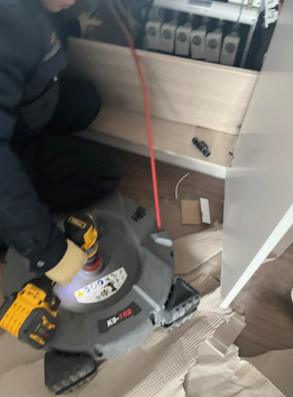
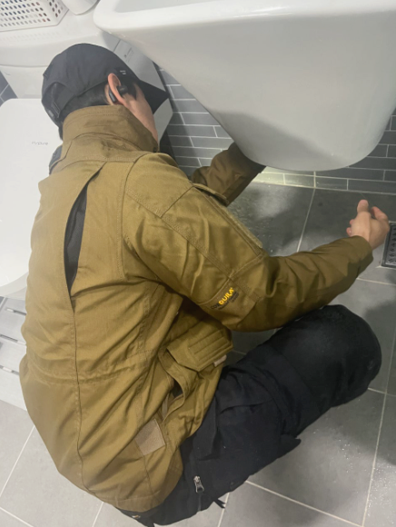
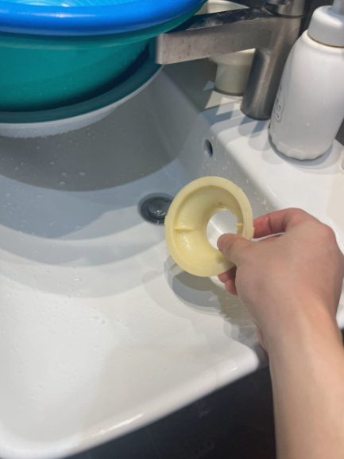

세면볼에 물이 오래 고임
세안이나 양치 후 물이 바로 내려가지 않고 한참 남아 있다면 울산세면대막힘 초기 증상일 수 있습니다. 표면 오염인지 안쪽 통로 정체인지 구분이 필요합니다.
울산세면대막힘으로 물이 잘 내려가지 않거나 악취, 물고임이 반복될 때 팝업·트랩·연결 배관 점검이 필요할 수 있습니다. 울산 지역 세면대 물안내려감·배수구막힘 안내, 수리남케어 24시간 상담.

울산 세면대 배수 상태와 막힘 위치를 확인하는 현장 이미지세면대 물안내려감과 함께 꾸르륵 소리, 역한 냄새, 하부장 습기까지 동반되는 상황 · 세면대 물안내려감 · 배수구막힘 · 악취 · 트랩 문제
세안이나 양치 후 물이 바로 내려가지 않고 한참 남아 있다면 울산세면대막힘 초기 증상일 수 있습니다. 표면 오염인지 안쪽 통로 정체인지 구분이 필요합니다.
배수 중 공기가 밀려 나오는 듯한 소리나 냄새가 반복되면 팝업 아래, 트랩 내부, 연결 배관의 흐름 저하를 함께 의심해 볼 수 있습니다.
막힘과 함께 하부장 바닥이 축축하거나 연결부에 물방울이 보인다면 단순 이물질 제거보다 배관 연결 상태 확인이 먼저일 수 있습니다.


세면대에 물이 오래 고이거나 배수구 주변에서 냄새가 올라오면 생활 불편이 금방 커집니다. 세면대 물안내려감 증상은 처음에는 단순히 배수 속도가 조금 느려진 정도로 시작합니다. 하지만 시간이 지나면 세면볼에 물이 오래 남고, 사용 중 꾸르륵 소리가 나거나 악취가 올라오며, 심한 경우 하부 트랩 주변으로 누수처럼 보이는 물방울이 맺히기도 합니다. 그래서 완전히 막히기 전에 원인을 점검하는 것이 중요합니다.
하부 트랩은 냄새 차단에 중요한 역할을 하지만 구조상 오염이 머무르기 쉬운 구간이기도 합니다. 직접 분리 청소를 시도하다가 패킹이 어긋나거나 연결 부속이 약해지면 오히려 누수가 생길 수 있으므로 상태를 보고 조심스럽게 접근해야 합니다. 세면대 아래 수납장에 물건이 많아 배관이 눌린 경우도 생각보다 자주 발견됩니다.
반복되는 세면대 배수구막힘은 한 번 해결했다고 끝나지 않을 수 있습니다. 생활 습관과 사용 환경에 따라 다시 비슷한 오염이 쌓일 수 있기 때문에, 작업 후에도 팝업 주변 이물질 제거, 뜨거운 물 사용 주의, 세정제 혼합 금지 같은 기본 관리가 중요합니다.
울산 지역에서 세면대 배수구막힘을 검색하는 분들은 보통 “세면대 물안내려감”, “세면대 악취”, “세면대 팝업 청소”, “세면대 트랩 막힘” 같은 표현으로도 많이 찾습니다. 그래서 이 페이지는 단순 홍보 문구보다 실제로 자주 묻는 증상과 확인 포인트를 중심으로 내용을 구성했습니다. 하수구막힘이나 싱크대막힘과 달리 세면대는 작은 이물질 누적이 큰 불편으로 이어지는 경우가 많아 초기 대응이 특히 중요합니다.
무작정 뚫기보다 증상 확인 → 팝업·트랩 확인 → 배관 흐름 파악 → 배수 테스트 순서로 접근합니다.
물이 천천히 내려가는지, 냄새가 나는지, 역류처럼 보이는지, 누수가 있는지 먼저 나눠 확인합니다.
세면대 배수구 마개 주위의 머리카락, 비누 찌꺼기, 화장품 잔여물 등 표면 오염 상태를 살펴봅니다.
하부 트랩과 벽면 연결 부위를 보며 막힘 범위, 이음부 상태, 물고임 흔적을 확인합니다.
물을 흘려보내 흐름을 확인하고, 다시 막히지 않도록 주의할 점과 관리 팁을 안내합니다.
짧은 시간만 좋아졌다가 다시 느려진다면 표면만 잠깐 정리된 경우일 수 있습니다. 반복 증상은 안쪽 배관이나 트랩 오염 범위를 함께 확인해 보는 편이 좋습니다.
울산세면대막힘과 함께 싱크대막힘, 하수구막힘, 변기막힘까지 비슷한 불편이 있다면 개별 기구 문제인지 연결 배수관 문제인지 구분해서 접근해야 합니다.
세면대 팝업 주위에 걸린 머리카락과 이물질을 주기적으로 제거하고, 세면볼 안에 남은 비누 찌꺼기를 가볍게 닦아내면 통로 오염을 줄이는 데 도움이 됩니다. 세면대 아래 수납장 정리를 할 때는 배관을 무리하게 누르지 않도록 여유 공간을 두는 것이 좋습니다.
뜨거운 물이나 세정제를 사용할 때는 제품 안내를 확인하고, 서로 다른 세정제를 혼합하지 않는 것이 안전합니다. 일시적으로 냄새만 없애거나 표면만 정리하는 방식으로는 반복 막힘을 막기 어려울 수 있으므로, 배수 속도 저하가 계속되면 원인을 먼저 확인해 보세요.
울산세면대막힘 키워드로 검색해 들어온 사용자는 보통 급한 해결도 원하지만, 무엇이 문제인지 이해하고 싶어 하는 경우도 많습니다. 그래서 이 페이지에는 세면대 배수구막힘, 세면대 물안내려감, 세면대 악취, 연결 배관 점검 내용을 함께 담아 정보성과 검색 적합성을 동시에 높였습니다.
예전보다 배수 속도가 눈에 띄게 느려졌다면 완전히 막히기 전에 팝업과 트랩 상태를 먼저 점검해 보는 것이 좋습니다. 반복될수록 안쪽 오염이 더 쌓일 수 있습니다.
배관 재질과 연결 상태를 모른 채 끓는 물이나 여러 세정제를 섞어 쓰는 것은 피하는 편이 안전합니다. 제품 안내사항을 확인하고, 증상이 반복되면 막힌 위치를 먼저 구분해 보세요.
세면대 팝업·트랩에만 생긴 막힘과 공동 배수관 문제는 다를 수 있습니다. 다른 배수구까지 함께 느리다면 세면대 단독 문제가 아닌지 비교해 보는 것이 도움이 됩니다.
배수 속도와 함께 트랩 내부 오염, 물이 고여 있는 시간, 하부장 습기나 누수 흔적 등을 함께 확인해 보세요. 냄새만 제거해도 원인이 남아 있으면 다시 불편이 반복될 수 있습니다.